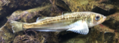

はたはた（鰰）の漁獲量 都道府県ランキング
1位から3位までと、とれた量
はたはたが日本でいちばん多くとれるのは鳥取県です。617 tで、全国（1,427 t）の43%を占めます。

| 順位 | 都道府県 | 漁獲量 | 全国に占める割合 |
|---|---|---|---|
| 1位 | 鳥取県 | 617 t | 43% |
| 2位 | 北海道 | 394 t | 28% |
| 3位 | 兵庫県 | 263 t | 18% |
この数字について
- 分類：鰰の仲間
- 全国の漁獲量：1,427 t
- この数字が表すもの：漁獲量（海でとった重さ。養殖は含みません）
- 調査：海面漁業生産統計調査（海面漁業） 令和6年
- 9県分を調査（調査していない県は順位に入りません）
はたはたの漁獲量について、よくある質問
- はたはたの漁獲量が日本一の都道府県はどこですか？
- 鳥取県です。海面漁業生産統計調査（海面漁業）（令和6年）で617 tでした。
- はたはたの漁獲量ランキング2位・3位はどこですか？
- 2位は北海道（394 t）、3位は兵庫県（263 t）です。
- はたはたの全国の漁獲量はどれくらいですか？
- 1,427 t（令和6年）です。